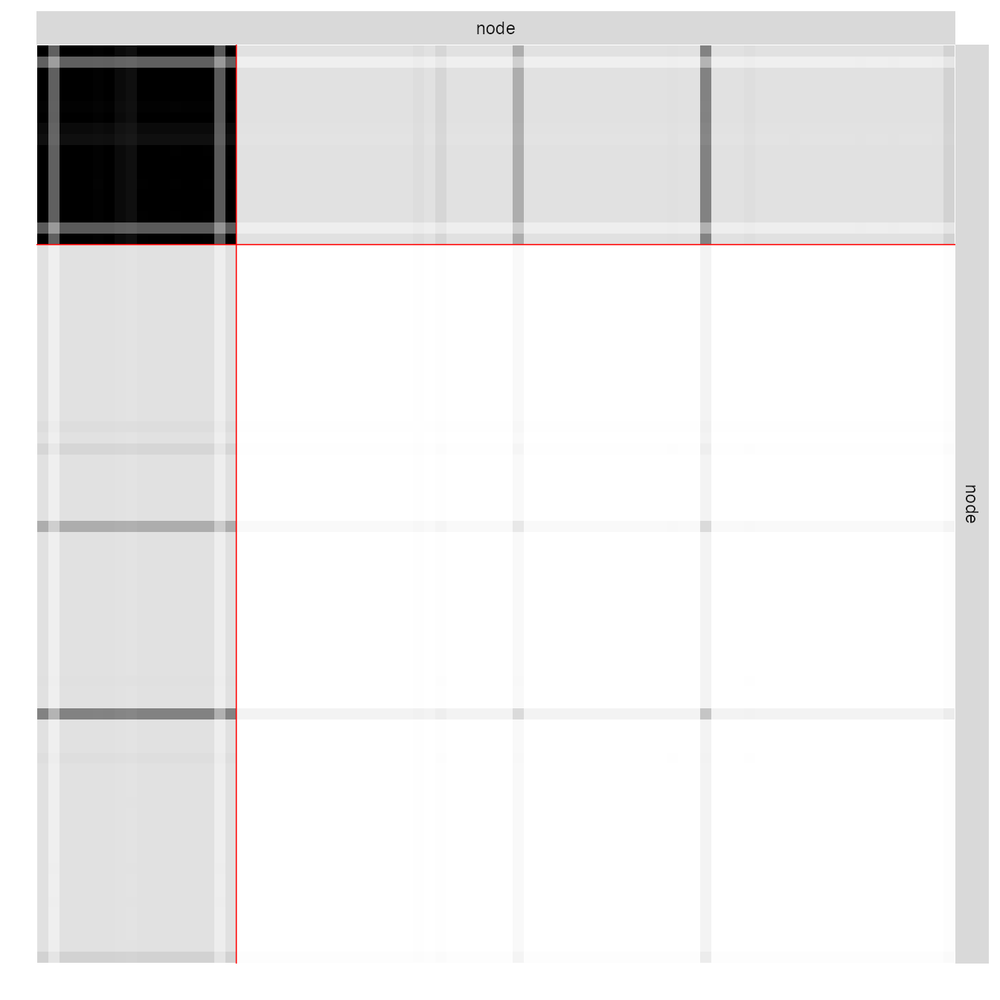
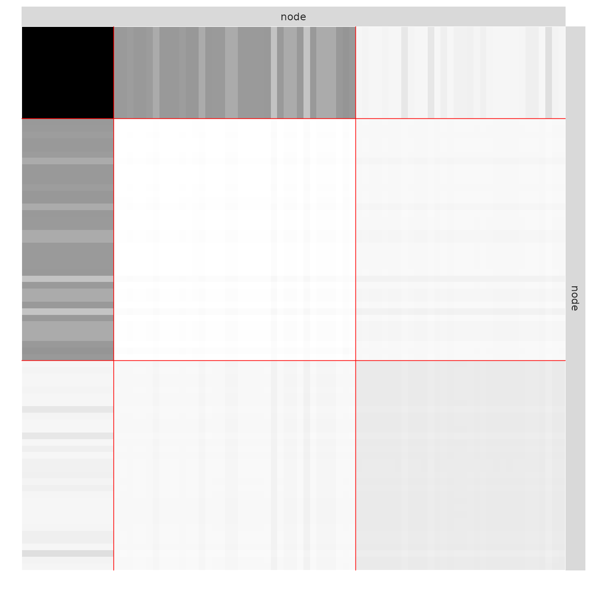
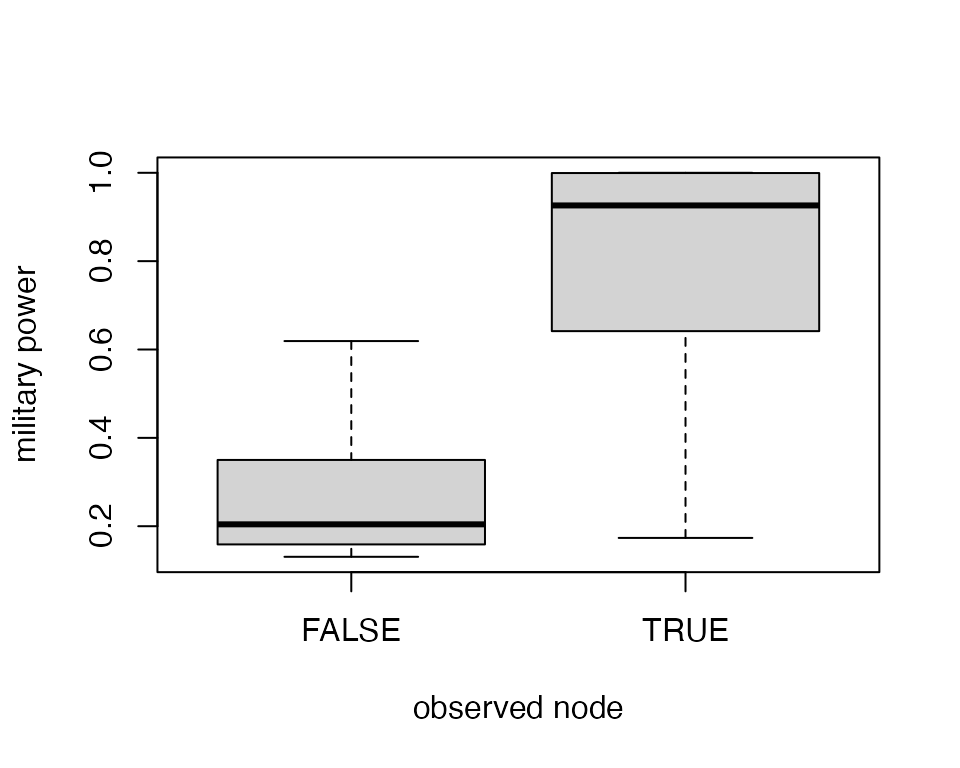
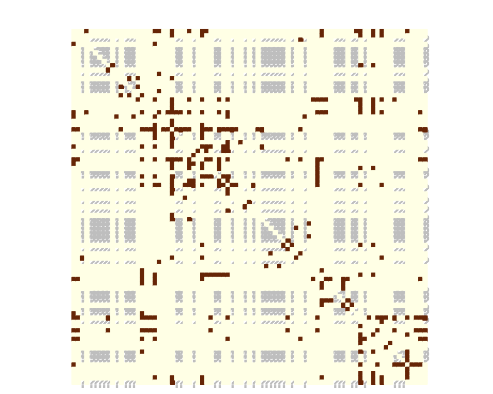
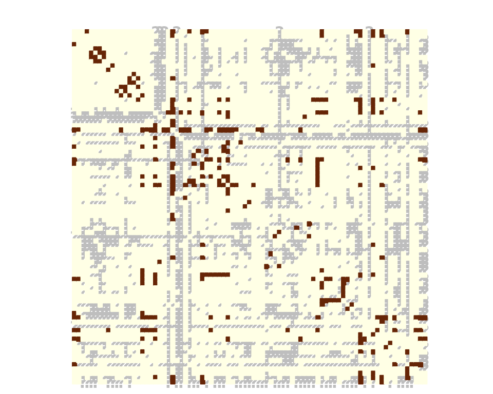

missSBM: a case study with war networks
missSBM team
Last update: 2026-07-21
Source:vignettes/case_study_war_networks.Rmd
case_study_war_networks.RmdPrerequisites
On top of missSBM, our analysis will rely on the igraph package for network data manipulation, and ggplot2 and magrittr for representation.
library(igraph)
library(ggplot2)
library(corrplot)
library(magrittr)
library(missSBM)
library(future)missSBM integrates some features of the future package to perform parallel computing: you can set your plan now to speed the fit by relying on 2 workers as follows:
future::plan("multisession", workers = 2)The war network
The war data set comes with the missSBM
package:
data("war")This data set contains a list of two networks
(belligerent and alliance) where the nodes are
countries; an edge in the network belligerent means that
the two countries have been at war at least once between years 1816 to
2007; an edge in network alliance means that the two
countries have had a formal alliance between years 1816 and 2012. The
network belligerent has fewer nodes since countries which
have not been at war at all are not considered.
These two networks were extracted from https://correlatesofwar.org/
(see Sarkees and Wayman (2010) for war data, and Gibler (2008) for formal
alliance). Version 4.0 was used for war data and version 4.1 for formal
alliance. On top of the two networks, two covariates were considered.
One covariate is concerned with military power of the states (see Singer et al. (1972), version 5.0 was used)
and the other is concerned with trade exchanges between countries (see
Barbieri et al. (2016) and Barbieri et al. (2009), version 4.0 was used).
In the following, we focus on the network war$belligerent,
which is provided as an igraph object:
par(mar = c(0,0,0,0))
plot(war$belligerent,
vertex.shape="none", vertex.label=V(war$belligerent)$name,
vertex.label.color = "steel blue", vertex.label.font=1.5,
vertex.label.cex=.6, edge.color="gray70", edge.width = 2)
To pursue our analysis, we extract the adjacency matrix of the network, a covariate on the vertices describing the military power of each country, and a covariate on the dyads describing the intensity of trade between two countries.
belligerent_adjacency <- as_adjacency_matrix(war$belligerent, sparse = FALSE)
belligerent_power <- war$belligerent$power
belligerent_trade <- war$belligerent$tradeGenerating missing data
Even though the dataset was complete, we can assume that some data
may be missing for the sake of illustration. More specifically, the data
collection may be missing for some countries in the sense that data were
collected comprehensively for a subset of countries and for the other
countries we only observe their edges with the first subset and not
within them. Thus, the sampling is node-centered and collects edges
information accordingly (there will be a block of missing data on the
diagonal of the adjacency matrix). To this end we rely on the function
observeNetwork in missSBM:
partlyObservedNet_war <- observeNetwork(belligerent_adjacency, sampling = "node", parameters = .8)
corrplot(partlyObservedNet_war,
is.corr = FALSE,
tl.pos = "n",
method = "color",
cl.pos = "n",
na.label.col = "grey",
mar = c(0,0,1,0)
)
Estimation with missing data
We can now adjust a Stochastic Block Model with the function
estimateMissSBM under this type of sampling: by default, we
use a forward/backward (split and merge) strategy on the clustering to
avoid local minima and get a robust Integrated Classification Likelihood
Criterion, commonly used to perform model selection. This will make the
choice of the number of groups/blocks more robust. The number of
exploration passes can be tuned via the iterates argument
of missSBM_param(), passed as the control
argument (iterates = 0 disables exploration entirely).
vBlocks <- 1:5
collection_sbm <- estimateMissSBM(partlyObservedNet_war, vBlocks, sampling = "node")Estimation on fully observed network
We would like to compare our results with the clustering obtained on the fully observed network. To this end, we adjust a collection of SBM on the original adjacency matrix:
collection_sbm_full <-
estimateMissSBM(belligerent_adjacency, vBlocks, sampling = "node", control = missSBM_param(iterates = 2))As expected, the ICL on the fully observed network is better. But more interestingly, the number of groups selected may differ in the presence of missing data.
rbind(
data.frame(ICL = collection_sbm_full$ICL, nbBlocks = vBlocks, type = "full"),
data.frame(ICL = collection_sbm$ICL, nbBlocks = vBlocks, type = "missing")
) %>%
ggplot(aes(x = nbBlocks, y = ICL, group = type, color = type)) +
labs(title = "Model selection", x = "#blocks", y = "Integrated Classification Likelihood") +
geom_line() + theme_bw()
Indeed, two classes found on the fully observed network fuse in the SBM fitted on the partially observed network.
table(
collection_sbm$bestModel$fittedSBM$memberships,
collection_sbm_full$bestModel$fittedSBM$memberships
)##
## 1 2 3
## 1 14 4 0
## 2 0 33 32The model finally fitted on the network data can be represented
thanks to a plot method applying on objects with class
SBM:

plot(collection_sbm_full$bestModel, type = "expected")
Taking covariates into account
This part shows how to account for covariates in the model.
Military power
We first consider a covariate reflecting the military power of the country, hence associated to the nodes. We typically expect a part of the network to be explained by this covariate. We run the inference on the fully observed network:
vBlocks <- 1:3
collection_sbm_power_full <- estimateMissSBM(belligerent_adjacency, vBlocks = vBlocks, sampling = "node", covariates = list(belligerent_power))Note that by default, the distribution of edges depends on the covariate(s), if any are included in the model.
The covariate provided as a vector is transferred on edges through an
similarity: for edge
the associated covariate is defined by
where
denotes the covariate for node
.
Another similarity measure could be provided via the option
similarity.
The estimated effect of the covariate is obtained through
collection_sbm_power_full$bestModel$fittedSBM$covarParam## [1] -12.23216The covariate could be responsible for the sampling. States with bigger military power are more likely to be fully observed than the others. We will simulate this sampling. An intercept is considered by default in the sampling model.
nWar <- nrow(belligerent_adjacency)
parameters_sample <- 600
sampleNet_power_miss <- observeNetwork(
belligerent_adjacency,
sampling = "covar-node",
parameters = parameters_sample, covariates = list(belligerent_power), intercept = -2
)
observedNodes <- !is.na(rowSums(sampleNet_power_miss))
data.frame(observedNodes = observedNodes,
belligerent_power = belligerent_power
) |>
ggplot(aes(x = factor(observedNodes), y = belligerent_power)) +
geom_boxplot(fill = "skyblue", alpha = 0.6) +
scale_y_log10() +
labs(
x = "observed node",
y = "military power (log-scale)",
title = "Military power distribution according to node status"
) +
theme_minimal()
corrplot(sampleNet_power_miss,
is.corr = FALSE,
tl.pos = "n",
method = "color",
cl.pos = "n",
na.label.col = "grey",
mar = c(0,0,1,0)
)
Then, we can estimate the model by setting the sampling to be
covar-node. We can still choose whether or not to consider
the covariate in the SBM.
collection_sbm_power_miss <- estimateMissSBM(sampleNet_power_miss, vBlocks = vBlocks, sampling = "covar-node", covariates = list(belligerent_power))Then we can access the estimated sampling parameters:
collection_sbm_power_miss$bestModel$fittedSampling$parameters## [1] -1.858769 541.916733and the parameters in the SBM associated with the covariate:
collection_sbm_power_miss$bestModel$fittedSBM$covarParam## [1] -5.487374Trade data
Another covariate is the average trade exchange between the states. This covariate is related to pairs of states hence to the dyads. We first build a matrix of dissimilarity according to this covariate:
trade <- belligerent_trade
trade[is.na(trade)] <- 0
trade <- trade + t(trade)
trade <- log(trade + 1)
diag(trade) <- 0We then conduct a similar analysis as with the power to see how it can be accounted for in the SBM.
We first sample according to it:
parameters_sample <- 1
sampleNet_trade_miss <- observeNetwork(belligerent_adjacency, sampling = "covar-dyad", parameters = parameters_sample, covariates = list(trade), intercept = -2)
corrplot(sampleNet_trade_miss,
is.corr = FALSE,
tl.pos = "n",
method = "color",
cl.pos = "n",
na.label.col = "grey",
mar = c(0,0,1,0)
)
The choice of the sampling parameters makes dyads with a large trade exchange more likely to be observed. We then perform estimation on the missing data drawn according to the trade covariate.
collection_sbm_trade_miss <- estimateMissSBM(sampleNet_trade_miss, vBlocks = vBlocks, sampling = "covar-dyad", covariates = list(trade))##
##
## Adjusting Variational EM for Stochastic Block Model
##
## Imputation assumes a 'covar-dyad' network-sampling process
##
## Initialization of 3 model(s).
## Performing VEM inference
## Model with 2 blocks. Model with 3 blocks. Model with 1 blocks. Polishing (node-swap)
##
## Looking for better solutions
## Pass 1 Going forward ++ Pass 1 Going backward ++
collection_sbm_trade_miss$bestModel$fittedSampling$parameters## [1] -2.205657 1.053432
collection_sbm_trade_miss$bestModel$fittedSBM$covarParam## [1] 0.2038448When you are done, do not forget to get back to the standard sequential plan with future.
future::plan("sequential")